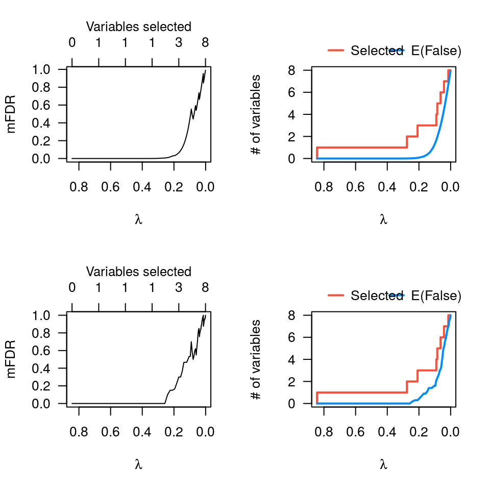

Marginal false discovery rates
mfdr.RdEstimates the marginal false discovery rate (mFDR) of a penalized regression model.
mfdr(fit, X)
Arguments
| fit | An |
|---|---|
| X | The model matrix corresponding to |
Details
The function estimates the marginal false discovery rate (mFDR) for a
penalized regression model. The estimate tends to be accurate in most
settings, but will be slightly conservative if predictors are highly
correlated. For an alternative way of estimating the mFDR, typically more
accurate in highly correlated cases, see perm.ncvreg.
Value
An object with S3 class mfdr inheriting from data.frame and
containing:
The number of variables selected at each value of
lambda, averaged over the permutation fits.
The actual number of selected variables for the non-permuted data.
The estimated marginal false discovery rate (EF/S).
See also
Examples
# Linear regression -------------------------------- data(Prostate) fit <- ncvreg(Prostate$X, Prostate$y) obj <- mfdr(fit) obj[1:10,]#> EF S mFDR #> 0.84343 0.000000e+00 0 0.000000e+00 #> 0.78658 1.418692e-11 1 1.418692e-11 #> 0.73357 3.642789e-11 1 3.642789e-11 #> 0.68413 1.098086e-10 1 1.098086e-10 #> 0.63802 3.833845e-10 1 3.833845e-10 #> 0.59502 1.516932e-09 1 1.516932e-09 #> 0.55492 6.608721e-09 1 6.608721e-09 #> 0.51752 3.065378e-08 1 3.065378e-08 #> 0.48264 1.460789e-07 1 1.460789e-07 #> 0.45011 6.907848e-07 1 6.907848e-07# Comparison with perm.ncvreg par(mfrow=c(2,2)) plot(obj) plot(obj, type="EF") pmfit <- perm.ncvreg(Prostate$X, Prostate$y) plot(pmfit) plot(pmfit, type="EF") # Note that mfdr() is more conservative# Logistic regression ------------------------------ data(Heart) fit <- ncvreg(Heart$X, Heart$y, family="binomial") obj <- mfdr(fit) head(obj)#> EF S mFDR #> 0.17746 0.000000e+00 0 0.000000e+00 #> 0.16550 6.893422e-13 1 6.893422e-13 #> 0.15435 2.683651e-11 1 2.683651e-11 #> 0.14394 6.329530e-10 1 6.329530e-10 #> 0.13424 9.776334e-09 1 9.776334e-09 #> 0.12519 1.054851e-07 1 1.054851e-07plot(obj) plot(obj, type="EF") # Cox regression ----------------------------------- data(Lung) fit <- ncvsurv(Lung$X, Lung$y) obj <- mfdr(fit) head(obj)#> EF S mFDR #> 0.44806 0.000000e+00 0 0.000000e+00 #> 0.41786 9.926598e-06 1 9.926598e-06 #> 0.38970 3.996605e-05 1 3.996605e-05 #> 0.36344 1.392150e-04 1 1.392150e-04 #> 0.33894 4.272559e-04 1 4.272559e-04 #> 0.31610 1.173937e-03 1 1.173937e-03plot(obj) plot(obj, type="EF")